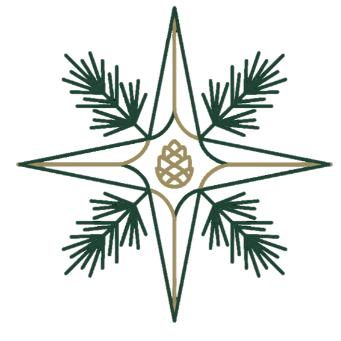

我們不販售命運。
我們只創造讓人回到自己的氣味。
在這個快速的時代，
人們被迫不斷前進。
很少有人被允許停下來，
感受自己真正的狀態。
Soul Traveler 的香氣，
不是為了改變你的人生，
而是陪伴你在不同時刻，
重新回到自己。
每個人，都是在世界中行走的旅人。
生命並不是一條筆直的道路，
而是在不同狀態之間來回流動。
有時清晰，有時迷失，
有時燃燒，有時需要停下來休息。
這些狀態，本來就是生命的一部分。
Soul Traveler 的存在，不是為了改變命運，
而是為了讓人在不同時刻，重新回到自己。
每個人都在宇宙中旅行。
有時迷路，有時找到方向。
我們創造的不是商品，
而是陪伴靈魂前行的法器。
當氣味被喚醒，
內在的羅盤也會重新轉動。
沒有一種香氣可以直接帶來財富，
也沒有一個儀式可以取代行動。
真正改變生命的，永遠是人本身。
我們創造的，只是一種提醒。
提醒人在混亂時停下來，
提醒人在疲憊時重新呼吸，
提醒人在迷失時再次感覺自己。
當人回到自己的節奏，
世界自然會開始重新排列。
氣味是最原始的感知之一。
它不需要語言，也不需要思考。
一個氣味可以讓人放鬆，也可以讓人清醒。
可以讓人想起某個地方，也可以讓人重新感覺自己。
因此我們選擇香氣，作為狀態轉換的載體。
不是為了改變世界，而是為了讓人重新感知自己的狀態。
人的生命其實不需要太多方向。
大多時候，我們只是在幾種狀態之間循環。
有時需要清晰與行動。有時需要安靜與穩定。
有時需要重新點燃熱度。有時需要深層休息。
因此 Soul Traveler 只專注於四種狀態：
每一款香氣，都是為了某一種狀態而存在。
我們稱它為「儀式」，而不是「力量」。
儀式並不神秘。
它只是讓人在日常之中，留下一個短暫停下來的空間。
當人願意停下來幾秒鐘，狀態就開始改變。
香氣只是陪伴這個過程。
Cosmic Energy Structure
狻猊 ‧ 貔貅
回火之心
靜息之森
Soul Traveler 不販售命運。
我們只創造一些簡單的物件，
讓人在需要的時候，重新回到自己。
旅程仍然是你的。
氣味只是陪你走一段。
探索四種狀態